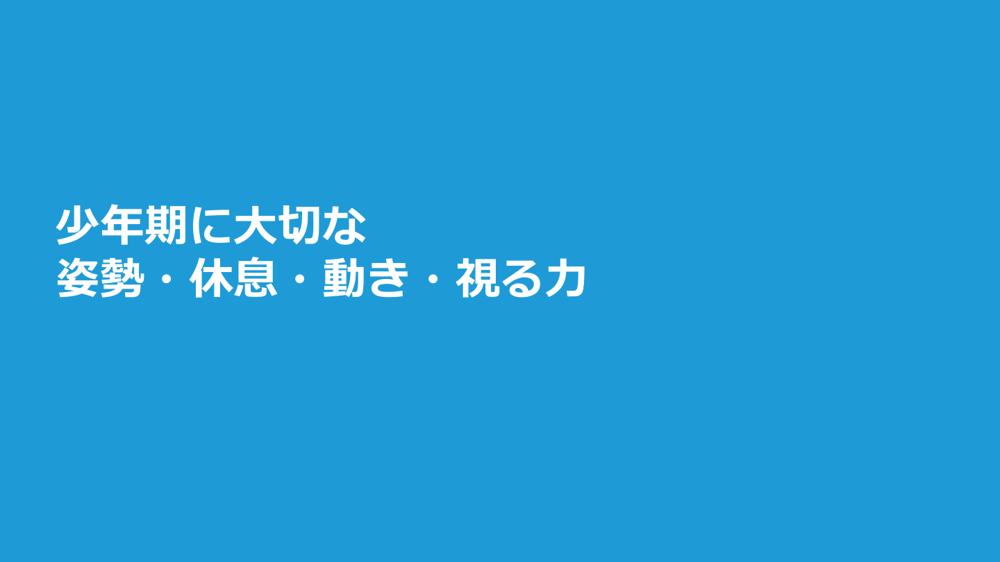

スライド 1〜4 0:00〜4:00
少年期に大切な 姿勢・休息・動き・視る力（本番用） 1 / 9
① 導入0:00〜4:00「今日の話は自分の団の子の話だ」と感じてもらいます。
01
0:00
30秒

表紙
あいさつ▸名乗る▸体を動かし、動画も見ます
皆さん、こんにちは。お忙しい中、ありがとうございます。
都城スポーツクラブシエロ、アトレタビジョンでマスタートレーナーをしています、（名前）です。
今日は体を動かしたり、動画を見たりしながら進めます。どうぞ楽な気持ちでご参加ください。
02
0:30
1分半

子どもの「できない」
捕れない・転ぶ・崩れる子、いませんか（3秒）▸「もっと練習」と言いがち▸原因は量だけ？硬さ・疲れ・見え方
まず、ひとつ質問です。ボールが捕れない子。すぐ転ぶ子。フォームが崩れる子。皆さんの団にもいませんか。
進行3秒ほど待ち、会場の顔を見る
そんなとき、つい「もっと練習しよう」と言ってしまいます。私もそうでした。
でも原因は、練習の量ではないかもしれません。体の硬さ、疲れ、そして見え方。目に見えない理由が隠れていることがあります。
03
2:00
1分

子どもの体は、大人を小さくしたものではない
大人の縮小版ではない▸骨は伸び途中・筋肉は追いつかない・見る力も育ち途中▸中学・高校の土台
子どもの体は、大人を小さくしたものではありません。
骨は伸びている途中。筋肉は、それに追いついていない。見る力も、まだ育っている途中です。
だから、この時期の体づくりが、中学、高校の土台になります。
04
3:00
1分

本日の4つのテーマ
姿勢▸動き▸休息▸視る力▸最後に一本につながる
今日のテーマは4つ。姿勢、動き、休息、視る力です。
バラバラの話ではありません。最後に一本につながります。
この台本の見方
・大きな字の一行（キーワード）だけを目で追い、話すのは自分の言葉で。下の小さな字は、詰まったときの控えです。
・左の時刻は「研修開始から何分でこのスライドに入るか」。手元のタイマーと比べ、遅れていたら次の小さな字を読まずにキーワードだけで進めます。
・各ページの左下に、めくるタイミングを書いています。オレンジは動画・実技の最中やパートの切れ目で、手が空いているときにめくれます。紺はそのスライドを話し終えたところでめくります。
・右下に、めくった先の最初のスライドを書いています。めくる前に次の話の入り方を確かめられます。
・本編は62:00で終わる計画です。そのあと8分が予備時間です。押したときは 46（質疑を2分に）→ 9（デモを2分に）→ 36 → 32 → 17・18 → 40 の順に削ると、合計で約7分縮みます。
パートの切れ目：次のパートに入る前にめくる次のページ ▸ スライド5「姿勢（扉）」 4:00〜